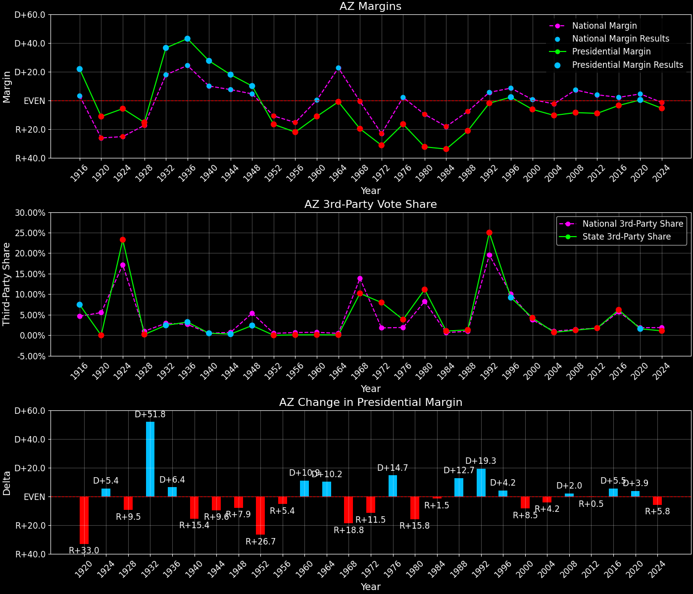

Arizona (AZ) — Statewide

Margins · 3rd-Party share · Pres. deltas

Relative margins · Relative 3rd-Party · Rel. deltas
Arizona (AZ) — Total Data
| Year | EVs | D | R | State Margin | Nat. Margin | Rel. Margin | Total votes |
|---|---|---|---|---|---|---|---|
| 1968 | 5 | 170,019(35.3%) | 264,806(55.0%) | R+19.7 | R+0.6 | R+19.1 | 481,177 |
| 1972 | 6 | 198,540(33.0%) | 402,812(67.0%) | R+34.0 (Δ R+14.3) | R+23.5 (Δ R+23.0) | R+10.4 (Δ D+8.7) | 601,352 |
| 1976 | 6 | 294,901(41.4%) | 418,079(58.6%) | R+17.3 (Δ D+16.7) | D+2.2 (Δ D+25.7) | R+19.5 (Δ R+9.0) | 712,980 |
| 1980 | 6 | 247,310(29.0%) | 529,071(62.0%) | R+33.0 (Δ R+15.8) | R+9.9 (Δ R+12.1) | R+23.1 (Δ R+3.7) | 852,744 |
| 1984 | 7 | 333,854(32.9%) | 681,416(67.1%) | R+34.2 (Δ R+1.2) | R+18.1 (Δ R+8.2) | R+16.1 (Δ D+7.0) | 1,015,270 |
| 1988 | 7 | 454,029(39.3%) | 702,541(60.7%) | R+21.5 (Δ D+12.7) | R+7.7 (Δ D+10.4) | R+13.7 (Δ D+2.4) | 1,156,570 |
| 1992 | 8 | 543,050(37.0%) | 572,086(38.9%) | R+2.0 (Δ D+19.5) | D+5.6 (Δ D+13.3) | R+7.6 (Δ D+6.2) | 1,468,877 |
| 1996 | 8 | 653,288(47.1%) | 622,073(44.8%) | D+2.2 (Δ D+4.2) | D+8.6 (Δ D+3.0) | R+6.3 (Δ D+1.3) | 1,387,435 |
| 2000 | 8 | 685,341(44.7%) | 781,652(51.0%) | R+6.3 (Δ R+8.5) | D+0.5 (Δ R+8.0) | R+6.8 (Δ R+0.5) | 1,531,766 |
| 2004 | 10 | 893,524(44.4%) | 1,104,294(54.9%) | R+10.5 (Δ R+4.2) | R+2.5 (Δ R+3.0) | R+8.0 (Δ R+1.2) | 2,010,568 |
| 2008 | 10 | 1,034,707(45.1%) | 1,230,111(53.7%) | R+8.5 (Δ D+2.0) | D+7.3 (Δ D+9.7) | R+15.8 (Δ R+7.8) | 2,292,080 |
| 2012 | 11 | 1,025,232(44.6%) | 1,233,654(53.7%) | R+9.1 (Δ R+0.5) | D+3.9 (Δ R+3.4) | R+12.9 (Δ D+2.9) | 2,298,802 |
| 2016 | 11 | 1,161,167(44.6%) | 1,252,401(48.1%) | R+3.5 (Δ D+5.6) | D+2.1 (Δ R+1.8) | R+5.6 (Δ D+7.3) | 2,604,580 |
| 2020 | 11 | 1,672,143(49.4%) | 1,661,686(49.1%) | D+0.3 (Δ D+3.8) | D+4.4 (Δ D+2.3) | R+4.1 (Δ D+1.5) | 3,385,294 |
| 2024 | 11 | 1,582,860(46.7%) | 1,770,242(52.2%) | R+5.5 (Δ R+5.8) | R+1.5 (Δ R+6.0) | R+4.0 (Δ D+0.2) | 3,390,161 |
Column explanations
- Δ
- Change (delta) in the value from the previous election year.
- Year
- Election year.
- EVs
- Number of electoral votes allocated to this state or unit.
- D
- Number of votes for the Democratic candidate (raw count(pct%)).
- R
- Number of votes for the Republican candidate (raw count(pct%)).
- State Margin
- Margin between the two major-party candidates, including third-party votes ((D - R)/total).
- Nat. Margin
- The national presidential margin for that year, including third-party votes ((D_total - R_total)/total_votes).
- Rel. Margin
- The presidential margin relative to the national presidential margin (Margin - Nat. Margin).
- Total votes
- Total voter turnout or ballots cast (when provided).
Arizona (AZ) — Third-Party Data
| Year | Other votes | State 3rd-Party Share | 3rd-Party Nat. Share | 3rd-Party Rel. Share |
|---|---|---|---|---|
| 1968 | 46,352(9.6%) | 9.63% | 13.59% | -3.95% |
| 1972 | 0(0.0%) | 0.00% | 0.09% | -0.09% |
| 1976 | 0(0.0%) | 0.00% | 0.33% | -0.33% |
| 1980 | 76,363(9.0%) | 8.95% | 6.98% | 1.98% |
| 1984 | 0(0.0%) | 0.00% | 0.12% | -0.12% |
| 1988 | 0(0.0%) | 0.00% | 0.21% | -0.21% |
| 1992 | 353,741(24.1%) | 24.08% | 19.23% | 4.85% |
| 1996 | 112,074(8.1%) | 8.08% | 9.68% | -1.60% |
| 2000 | 64,773(4.2%) | 4.23% | 3.65% | 0.58% |
| 2004 | 12,750(0.6%) | 0.63% | 0.84% | -0.20% |
| 2008 | 27,262(1.2%) | 1.19% | 1.38% | -0.19% |
| 2012 | 39,916(1.7%) | 1.74% | 1.62% | 0.11% |
| 2016 | 191,012(7.3%) | 7.33% | 5.54% | 1.80% |
| 2020 | 51,465(1.5%) | 1.52% | 1.84% | -0.32% |
| 2024 | 37,059(1.1%) | 1.09% | 1.88% | -0.79% |
Column explanations
- Year
- Election year.
- Other votes
- Number of votes for third-party (other) candidates (raw count(pct%)).
- State 3rd-Party Share
- Share of the vote received by third-party (other) candidates.
- 3rd-Party Nat. Share
- The national third-party share for that year (3rd-Party votes / total votes).
- 3rd-Party Rel. Share
- Third-party share relative to the national third-party share (3rd-Party share - Nat. 3rd-Party share).

Two-party margins · relative · deltas
Arizona (AZ) — Two-Party Data
| Year | 2-Party Margin | 2-Party Nat. Margin | 2-Party Rel. Margin |
|---|---|---|---|
| 1968 | R+21.8 | R+0.7 | R+21.1 |
| 1972 | R+34.0 (Δ R+12.2) | R+23.6 (Δ R+22.9) | R+10.4 (Δ D+10.7) |
| 1976 | R+17.3 (Δ D+16.7) | D+2.2 (Δ D+25.8) | R+19.5 (Δ R+9.1) |
| 1980 | R+36.3 (Δ R+19.0) | R+10.6 (Δ R+12.8) | R+25.7 (Δ R+6.2) |
| 1984 | R+34.2 (Δ D+2.1) | R+18.1 (Δ R+7.5) | R+16.1 (Δ D+9.6) |
| 1988 | R+21.5 (Δ D+12.7) | R+7.8 (Δ D+10.4) | R+13.7 (Δ D+2.4) |
| 1992 | R+2.6 (Δ D+18.9) | D+6.9 (Δ D+14.7) | R+9.5 (Δ D+4.2) |
| 1996 | D+2.4 (Δ D+5.1) | D+9.5 (Δ D+2.6) | R+7.0 (Δ D+2.5) |
| 2000 | R+6.6 (Δ R+9.0) | D+0.5 (Δ R+8.9) | R+7.1 (Δ R+0.1) |
| 2004 | R+10.6 (Δ R+4.0) | R+2.5 (Δ R+3.0) | R+8.1 (Δ R+1.0) |
| 2008 | R+8.6 (Δ D+1.9) | D+7.4 (Δ D+9.8) | R+16.0 (Δ R+7.9) |
| 2012 | R+9.2 (Δ R+0.6) | D+3.9 (Δ R+3.4) | R+13.2 (Δ D+2.8) |
| 2016 | R+3.8 (Δ D+5.4) | D+2.2 (Δ R+1.7) | R+6.0 (Δ D+7.2) |
| 2020 | D+0.3 (Δ D+4.1) | D+4.5 (Δ D+2.3) | R+4.2 (Δ D+1.8) |
| 2024 | R+5.6 (Δ R+5.9) | R+1.6 (Δ R+6.1) | R+4.0 (Δ D+0.2) |
Column explanations
- Δ
- Change (delta) in the value from the previous election year.
- Year
- Election year.
- 2-Party Margin
- Margin between the two major-party candidates, ignoring third-party votes ((D - R)/(D + R)).
- 2-Party Nat. Margin
- The national presidential margin for that year, including third-party votes ((D_total - R_total)/total_votes).
- 2-Party Rel. Margin
- The presidential margin relative to the national presidential margin (Margin - Nat. Margin).